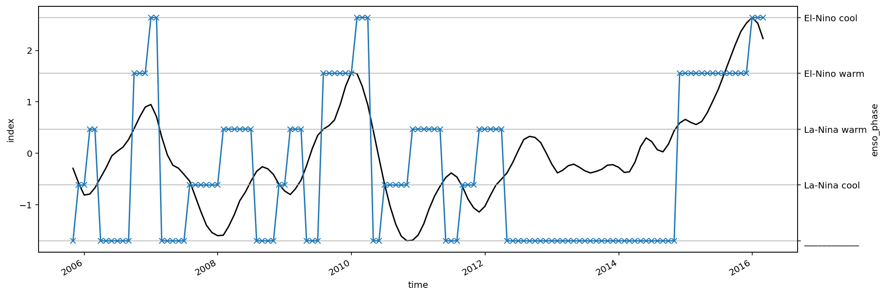

miχpods - TAO
Contents
miχpods - TAO#
%load_ext watermark
import os
import cf_xarray
import dask
import dcpy
import distributed
import flox.xarray
import hvplot.xarray
import matplotlib as mpl
import matplotlib.pyplot as plt
import numpy as np
import xarray as xr
import pump
from pump import mixpods
dask.config.set({"array.slicing.split_large_chunks": False})
mpl.rcParams["figure.dpi"] = 140
xr.set_options(keep_attrs=True)
gcmdir = "/glade/campaign/cgd/oce/people/bachman/TPOS_1_20_20_year/OUTPUT/" # MITgcm output directory
stationdirname = gcmdir
%watermark -iv
The watermark extension is already loaded. To reload it, use:
%reload_ext watermark
numpy : 1.22.4
dcpy : 0.1.dev360+g65bcf1a
xarray : 2022.6.0rc0
dask : 2022.6.1
flox : 0.5.8.dev1+gc387edc
sys : 3.10.5 | packaged by conda-forge | (main, Jun 14 2022, 07:04:59) [GCC 10.3.0]
hvplot : 0.8.0
distributed: 2022.6.1
pandas : 1.4.3
matplotlib : 3.5.2
pump : 0.1
json : 2.0.9
ipywidgets : 7.7.1
cf_xarray : 0.7.2
import ncar_jobqueue
if "client" in locals():
client.close()
del client
#if "cluster" in locals():
# cluster.close()
#env = {"OMP_NUM_THREADS": "3", "NUMBA_NUM_THREADS": "3"}
# cluster = distributed.LocalCluster(
# n_workers=8,
# threads_per_worker=1,
# env=env
# )
if "cluster" in locals():
del cluster
#cluster = ncar_jobqueue.NCARCluster(
# project="NCGD0011",
# scheduler_options=dict(dashboard_address=":9797"),
#)
# cluster = dask_jobqueue.PBSCluster(
# cores=9, processes=9, memory="108GB", walltime="02:00:00", project="NCGD0043",
# env_extra=env,
# )
import dask_jobqueue
cluster = dask_jobqueue.PBSCluster(
cores=1, # The number of cores you want
memory='23GB', # Amount of memory
processes=1, # How many processes
queue='casper', # The type of queue to utilize (/glade/u/apps/dav/opt/usr/bin/execcasper)
local_directory='$TMPDIR', # Use your local directory
resource_spec='select=1:ncpus=1:mem=23GB', # Specify resources
project='ncgd0011', # Input your project ID here
walltime='02:00:00', # Amount of wall time
interface='ib0', # Interface to use
)
cluster.scale(jobs=4)
/glade/u/home/dcherian/miniconda3/envs/pump/lib/python3.10/site-packages/distributed/node.py:180: UserWarning: Port 8787 is already in use.
Perhaps you already have a cluster running?
Hosting the HTTP server on port 36058 instead
warnings.warn(
client = distributed.Client(cluster)
client
Client
Client-a23cc9ca-0218-11ed-b39a-3cecef1acbfa
| Connection method: Cluster object | Cluster type: dask_jobqueue.PBSCluster |
| Dashboard: https://jupyterhub.hpc.ucar.edu/stable/user/dcherian/proxy/36058/status |
Cluster Info
PBSCluster
5a0408c3
| Dashboard: https://jupyterhub.hpc.ucar.edu/stable/user/dcherian/proxy/36058/status | Workers: 0 |
| Total threads: 0 | Total memory: 0 B |
Scheduler Info
Scheduler
Scheduler-00fee34f-3b83-4b61-abc5-50584dd75481
| Comm: tcp://10.12.206.63:43433 | Workers: 0 |
| Dashboard: https://jupyterhub.hpc.ucar.edu/stable/user/dcherian/proxy/36058/status | Total threads: 0 |
| Started: Just now | Total memory: 0 B |
Workers
tao_gridded = (
xr.open_dataset(
os.path.expanduser("~/work/pump/zarrs/tao-gridded-ancillary.zarr"), chunks="auto", engine="zarr"
)
.sel(longitude=-140, time=slice("2005-Jun", "2015"))
)
tao_gridded["depth"].attrs["axis"] = "Z"
# eucmax exists
tao_gridded.coords["eucmax"] = pump.calc.get_euc_max(tao_gridded.u.reset_coords(drop=True), kind="data")
#pump.calc.calc_reduced_shear(tao_gridded)
tao_gridded.coords["enso_transition"] = pump.obs.make_enso_transition_mask().reindex(time=tao_gridded.time, method="nearest")
tao_gridded.u.cf.plot()
tao_gridded.eucmax.plot()
/glade/u/home/dcherian/miniconda3/envs/pump/lib/python3.10/site-packages/xarray/core/dataset.py:248: UserWarning: The specified Dask chunks separate the stored chunks along dimension "depth" starting at index 58. This could degrade performance. Instead, consider rechunking after loading.
warnings.warn(
/glade/u/home/dcherian/miniconda3/envs/pump/lib/python3.10/site-packages/xarray/core/dataset.py:248: UserWarning: The specified Dask chunks separate the stored chunks along dimension "time" starting at index 139586. This could degrade performance. Instead, consider rechunking after loading.
warnings.warn(
/glade/u/home/dcherian/miniconda3/envs/pump/lib/python3.10/site-packages/xarray/core/dataset.py:248: UserWarning: The specified Dask chunks separate the stored chunks along dimension "longitude" starting at index 2. This could degrade performance. Instead, consider rechunking after loading.
warnings.warn(
[<matplotlib.lines.Line2D at 0x2b371a3ea890>]

tao_gridded = (
tao_gridded.update({
"n2s2Tpdf": mixpods.pdf_N2S2(
tao_gridded[["S2", "N2T"]].drop_vars(["shallowest", "zeuc"]).rename_vars({"N2T": "N2"})
).load(),
"n2s2pdf": mixpods.pdf_N2S2(
tao_gridded[["S2", "N2"]].drop_vars(["shallowest", "zeuc"])
).load()
}
)
)
Labeling ENSO phase transitions#
pump.obs.process_oni().sel(time=slice("2005-Oct", "2016-Feb")).reset_coords(drop=True).plot.line(aspect=3, size=5, color='k')
pump.obs.make_enso_transition_mask().sel(time=slice("2005-Oct", "2016-Feb")).reset_coords(drop=True).plot.line(ax=plt.gca().twinx(), marker='x')
plt.grid(True, which="both", axis="both")

N2 vs N2T#
Lot more data with N2T
tao_gridded.N2.cf.plot()
<matplotlib.collections.QuadMesh at 0x2b36c9291570>
tao_gridded.N2T.cf.plot()
<matplotlib.collections.QuadMesh at 0x2b372d13aa10>
PDFs change#
fg = (
tao_gridded.n2s2pdf
.sel(enso_transition_phase=["La-Nina cool", "La-Nina warm", "El-Nino warm", "El-Nino cool"])
.plot(vmax=1, col="enso_transition_phase")
)
fg.set_titles("{value}")
fg.map(dcpy.plots.line45)
fg.axes[0, 0].set_xlim((-4.5, -2.5))
fg.axes[0, 0].set_ylim((-4.5, -2.5))
(-4.5, -2.5)
(
tao_gridded.n2s2pdf
.sel(enso_transition_phase=["La-Nina cool", "La-Nina warm", "El-Nino warm", "El-Nino cool"])
.sum("N2_bins")
.plot(hue="enso_transition_phase")
)
plt.figure()
(
tao_gridded.n2s2pdf
.sel(enso_transition_phase=["La-Nina cool", "La-Nina warm", "El-Nino warm", "El-Nino cool"])
.sum("S2_bins")
.plot(hue="enso_transition_phase")
)
[<matplotlib.lines.Line2D at 0x2b36e3762830>,
<matplotlib.lines.Line2D at 0x2b36e3762800>,
<matplotlib.lines.Line2D at 0x2b36e37629b0>,
<matplotlib.lines.Line2D at 0x2b36e3762ad0>]
fg = (
tao_gridded.n2s2Tpdf
.sel(enso_transition_phase=["La-Nina cool", "La-Nina warm", "El-Nino warm", "El-Nino cool"])
.plot(vmax=1, col="enso_transition_phase")
)
fg.set_titles("{value}")
fg.map(dcpy.plots.line45)
fg.axes[0, 0].set_xlim((-4.5, -2.5))
fg.axes[0, 0].set_ylim((-4.5, -2.5))
(-4.5, -2.5)
(
tao_gridded.n2s2Tpdf
.sel(enso_transition_phase=["La-Nina cool", "La-Nina warm", "El-Nino warm", "El-Nino cool"])
.sum("N2_bins")
.plot(hue="enso_transition_phase")
)
plt.figure()
(
tao_gridded.n2s2Tpdf
.sel(enso_transition_phase=["La-Nina cool", "La-Nina warm", "El-Nino warm", "El-Nino cool"])
.sum("S2_bins")
.plot(hue="enso_transition_phase")
)
[<matplotlib.lines.Line2D at 0x2b36e3622ec0>,
<matplotlib.lines.Line2D at 0x2b36e3622ef0>,
<matplotlib.lines.Line2D at 0x2b36e3623070>,
<matplotlib.lines.Line2D at 0x2b36e3623190>]